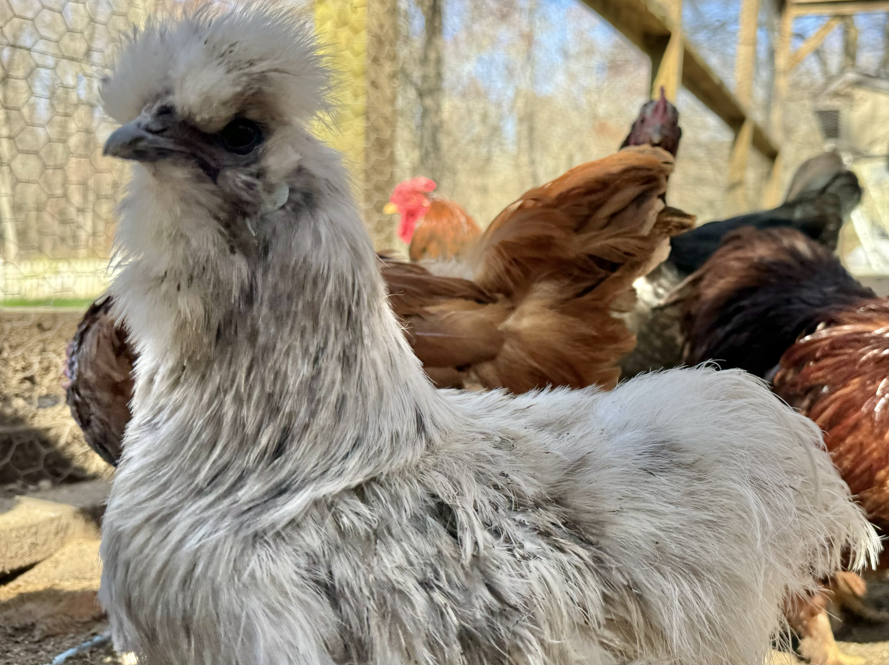
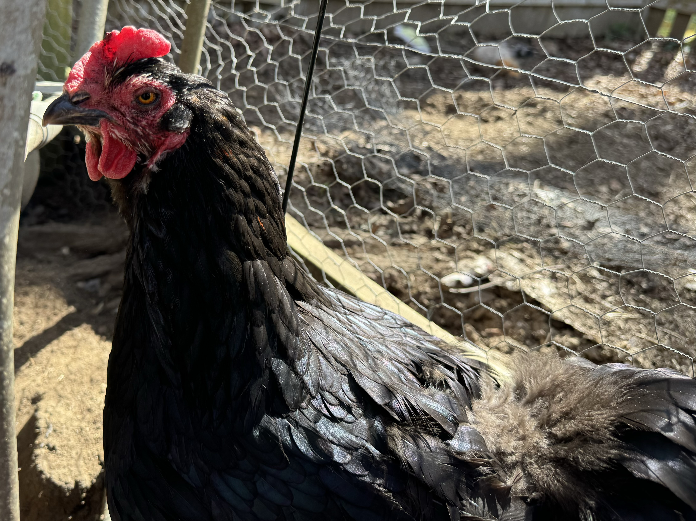
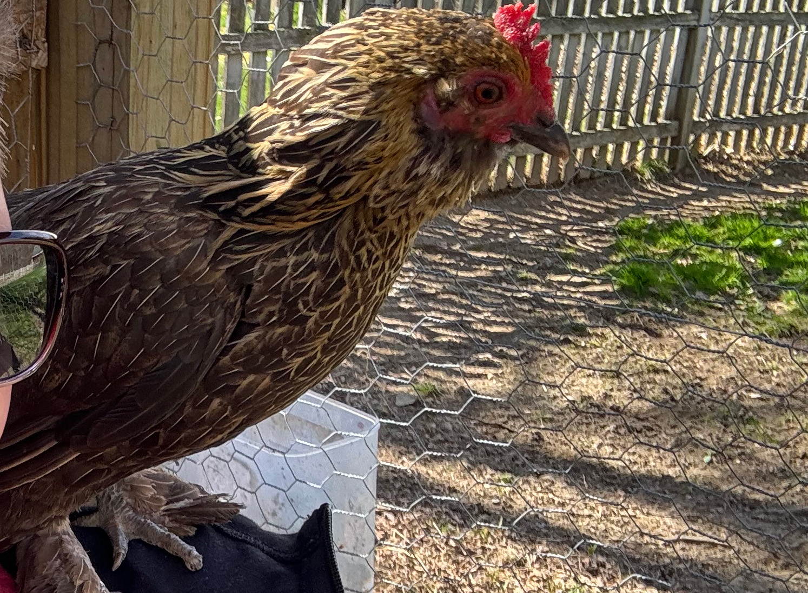
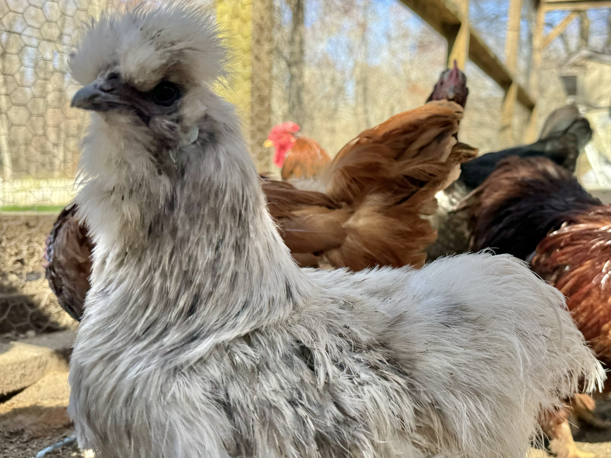
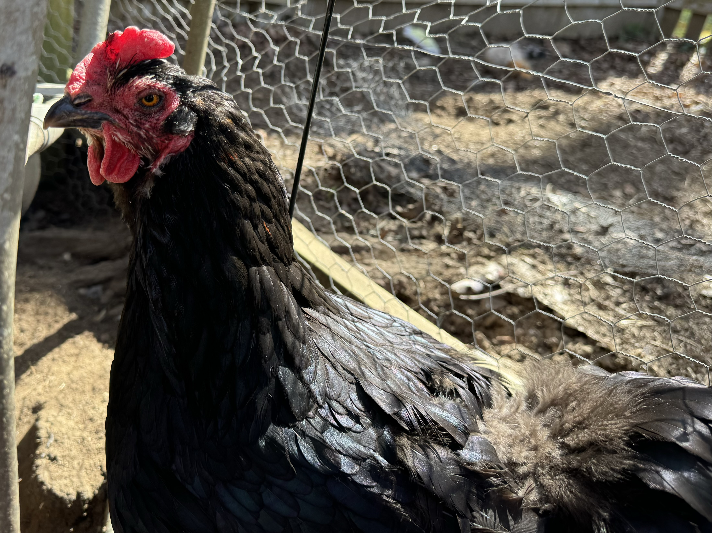
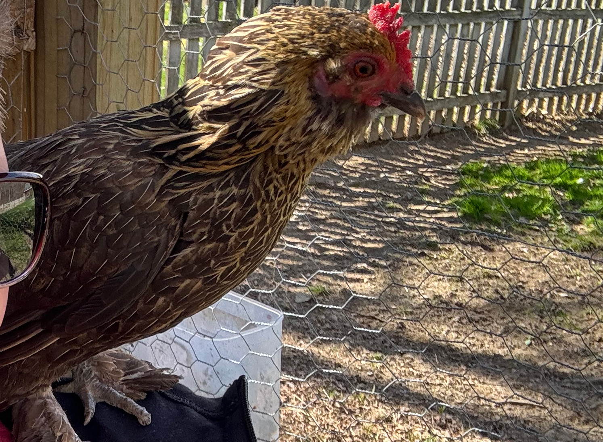

Chicken Breed Info!
Here is some information on popular chicken breeds that we own.
Cochin Chicken
This is Colten, who is a domestic cochin rooster. He has large feather-legs along with long feathers all over, and his breed was brought from China to Europe and North America in the 1840s and 1850s. The cochin hens have a good layer of very large tinted eggs, and lays well in winter. The hens are also good sitters and good mothers, and may be used to hatch the eggs of turkeys and ducks. Colten is a very sweet boy and loves his human family and flock. He is also very protective, loud, and crows all day.
Silkie Chicken
This is Shmoo the Silkie, (also known as the Silky or Chinese silk chicken) a breed of chicken named for its atypically fluffy plumage, which is said to feel like silk and satin. The breed has several other unusual qualities, such as black skin and bones, blue earlobes, and five toes on each foot, whereas most chickens have only four. Silkies are well known for their calm and friendly temperament. Hens are also exceptionally broody, and care for young well. They lay white eggs, and only lay 3 days a week. Shmoo can be sweet and loyal to her human mama, but sometimes she wants to be left alone.
Black Copper Maran Chicken
This is Charolote, a french breed called Black copper marans. It originated in or near the port town of Marans, in the département of Charente-Maritime, in the Nouvelle-Aquitaine region of south-western France. The eggs are of a rich brown, varying from mahogany to chocolate; only one other chicken breed, the Penedesenca of Catalonia, has such a dark egg. Charolote is one of our oldest girls. She is super sweet and doesnt mind the attention.
Barbu d'Uccle Chicken
This is Acorn the D'Uccle, another one of our oldest girls. She is a Belgian breed of bearded bantam chicken. It was first bred in the town of Uccle on the outskirts of Brussels, in central Belgium, in the early years of the twentieth century. It is a true bantam, with no standard-sized large fowl counterpart, and is one of eleven Belgian true bantam breeds. They are very tiny in size, and lay small white eggs. acorn is an absoloute sweetheart. She loves her hunman family so much. She doesnt like to get her feet dirty on rainy days, and jumps on our sholders.